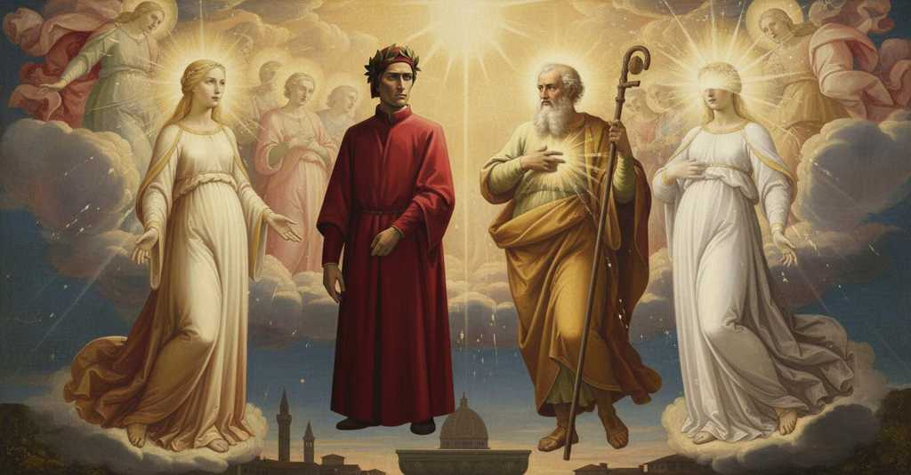

Paradiso — Canto 25

Dante spera di tornare a Firenze coronato poeta, poi san Giacomo lo interroga sulla speranza, che egli professa come attesa della gloria, mentre san Giovanni gli rivela l'errore sul suo corpo e lo lascia accecato, incapace di vedere Beatrice. Dante hopes to return to Florence crowned as a poet, then Saint James questions him about hope, which he professes as expectation of glory, while Saint John reveals his error about his body and leaves him blinded, unable to see Beatrice. ダンテは詩人として冠を受けてフィレンツェに帰ることを望み、次いで聖ヤコブは、彼が栄光への期待として告白する希望について彼を問い、聖ヨハネは自らの肉体についての彼の誤りを明かして、彼を盲目にし、ベアトリーチェを見られなくする。
1
Se mai continga che ’l poema sacro
If it ever happens that the sacred poem
もし万が一、この聖なる詩が
2
al quale ha posto mano e cielo e terra,
to which both heaven and earth have set their hand,
それに天も地も手を貸したる、
3
sì che m’ha fatto per molti anni macro,
so that it has made me lean for many years,
長年にわたり私を痩せ細らせたそれが、
4
vinca la crudeltà che fuor mi serra
should overcome the cruelty that locks me out
私を外に閉め出す非情さを打ち破り
5
del bello ovile ov’ io dormi’ agnello,
of the beautiful sheepfold where I slept a lamb,
私が子羊として眠った美しい羊小屋の、
6
nimico ai lupi che li danno guerra;
an enemy to the wolves that make war on it;
それに戦を仕掛ける狼たちの敵として。
7
con altra voce omai, con altro vello
with another voice now, with another fleece
もはや別の声で、別の羊毛をまとって
8
ritornerò poeta, e in sul fonte
I shall return as poet, and upon the font
私は詩人として帰り、そしてかの泉で
9
del mio battesmo prenderò ’l cappello;
of my baptism I shall take the crown;
私の洗礼の、その頂きに冠を戴こう。
10
però che ne la fede, che fa conte
because in the faith, that makes souls known
なぜなら、魂を神に知らしめる
11
l’anime a Dio, quivi intra’ io, e poi
to God, there I entered, and then
信仰の中に、そこで私は入り、そしてその後
12
Pietro per lei sì mi girò la fronte.
Peter for its sake so circled my brow.
ピエトロはそのために、かように私の額を巡ったのだ。
13
Indi si mosse un lume verso noi
Then a light moved toward us
やがて一つの光が我々の方へ動いた
14
di quella spera ond’ uscì la primizia
from that sphere from which came the first fruit
初穂が出たその天球から
15
che lasciò Cristo d’i vicari suoi;
that Christ left of His vicars;
キリストが自らの代理人として残した。
16
e la mia donna, piena di letizia,
and my lady, full of happiness,
そして私の貴婦人は、喜びに満ちて、
17
mi disse: «Mira, mira: ecco il barone
said to me: “Look, look: here is the baron
私に言った、「見なさい、見なさい、あれが貴人です
18
per cui là giù si vicita Galizia».
for whom, down there, Galicia is visited.”
その人のために、下界ではガリシアが巡礼される」。
19
Sì come quando il colombo si pone
Just as when the dove alights
鳩が仲間のそばに
20
presso al compagno, l’uno a l’altro pande,
near its companion, one to the other displays,
寄り添い、互いに愛情を
21
girando e mormorando, l’affezione;
circling and murmuring, their affection;
巡り、ささやきながら示すように、
22
così vid’ ïo l’un da l’altro grande
so did I see the one by the other great
そのように私は、一方から他方へと偉大な
23
principe glorïoso essere accolto,
glorious prince be welcomed,
栄光の君主が迎えられるのを見た、
24
laudando il cibo che là sù li prande.
praising the food that feasts them up there.
彼らをそこで養う糧を讃えながら。
25
Ma poi che ’l gratular si fu assolto,
But after the greeting was completed,
しかし、その歓迎の挨拶が終わると、
26
tacito coram me ciascun s’affisse,
silent *coram me* each one fixed himself,
静かに私の前に、それぞれが佇んだ、
27
ignito sì che vincëa ’l mio volto.
so ignited that he overcame my gaze.
私の顔を凌ぐほど燃え輝いて。
28
Ridendo allora Bëatrice disse:
Laughing then, Beatrice said:
その時ベアトリーチェは微笑んで言った、
29
«Inclita vita per cui la larghezza
“Glorious life through whom the generosity
「誉れ高き魂よ、その人によって我らの
30
de la nostra basilica si scrisse,
of our basilica was written,
聖堂の寛大さが記されました、
31
fa risonar la spene in questa altezza:
make hope resound in this height:
この高みで希望を鳴り響かせなさい。
32
tu sai, che tante fiate la figuri,
you know it, for you figure it as many times
あなたは知っている、あなたがそれを体現する回数は、
33
quante Iesù ai tre fé più carezza».
as Jesus showed the three most favor.”
イエスが三人に最も寵愛を示された回数と同じだと」。
34
«Leva la testa e fa che t’assicuri:
“Lift your head and be assured:
「頭を上げ、安心するがよい。
35
che ciò che vien qua sù del mortal mondo,
for that which comes up here from the mortal world
死すべき世界からここへ来るものは、
36
convien ch’ai nostri raggi si maturi».
must be matured by our rays.”
我らの光によって熟さねばならぬのだから」。
37
Questo conforto del foco secondo
This comfort from the second fire
この慰めが第二の炎から
38
mi venne; ond’ io leväi li occhi a’ monti
came to me; wherefore I lifted my eyes to the mountains
私に来た。それゆえ私は山に目を上げた、
39
che li ’ncurvaron pria col troppo pondo.
which had bowed them before with too much weight.
かつてあまりの重みで私をうなだれさせた山々に。
40
«Poi che per grazia vuol che tu t’affronti
“Since by grace our Emperor wills that you confront,
「恩寵により、汝が死ぬ前に
41
lo nostro Imperadore, anzi la morte,
before your death,
我らの皇帝と、その君侯たちと共に
42
ne l’aula più secreta co’ suoi conti,
Him in His most secret hall with His counts,
最も奥深い広間で対面することが望まれているからには、
43
sì che, veduto il ver di questa corte,
so that, having seen the truth of this court,
この宮廷の真実を見て、
44
la spene, che là giù bene innamora,
you may with that strengthen hope, which brings good love below,
下界で正しく愛を抱かせる希望が、
45
in te e in altrui di ciò conforte,
in yourself and in others,
汝と他の者たちをそれによって力づけるように、
46
di’ quel ch’ell’ è, di’ come se ne ’nfiora
say what it is, say how it blossoms
それが何であるか、汝の心がいかにそれで花開くか、
47
la mente tua, e dì onde a te venne».
in your mind, and say whence it came to you.”
そしてそれがどこから汝に来たかを語れ」。
48
Così seguì ’l secondo lume ancora.
Thus the second light continued.
そのように第二の光は続けた。
49
E quella pïa che guidò le penne
And that pious one who guided the feathers
そして私の翼の羽を
50
de le mie ali a così alto volo,
of my wings to so high a flight,
かくも高き飛翔へと導いたあの敬虔な御方は、
51
a la risposta così mi prevenne:
anticipated my reply thus:
答えに先立ってこのように言った。
52
«La Chiesa militante alcun figliuolo
“The Church Militant has no son
「戦う教会は、いかなる息子も
53
non ha con più speranza, com’ è scritto
with greater hope, as is written
これほど希望に満ちた者を持たない、我らの全軍を
54
nel Sol che raggia tutto nostro stuolo:
in the Sun that irradiates all our host:
照らす太陽のうちに記されているように。
55
però li è conceduto che d’Egitto
therefore it is granted him that from Egypt
それゆえ彼には、エジプトから
56
vegna in Ierusalemme per vedere,
he come to Jerusalem to see,
イェルサレムに来て見るということが許されている、
57
anzi che ’l militar li sia prescritto.
before his term of service is prescribed.
その戦役が定められる前に。
58
Li altri due punti, che non per sapere
The other two points, which are asked not for knowing
他の二つの点、それは知るためではなく、
59
son dimandati, ma perch’ ei rapporti
but so that he may report back
彼が報告するために問われたのだが、
60
quanto questa virtù t’è in piacere,
how much this virtue is a pleasure to you,
この徳がいかにあなたに喜ばしいかを、
61
a lui lasc’ io, ché non li saran forti
to him I leave them, for they will not be hard
彼に私は任せます。それらは彼にとって難しくもなく、
62
né di iattanza; ed elli a ciò risponda,
nor of boastfulness; and let him to this respond,
自慢にもならないでしょうから。そして彼がそれに答え、
63
e la grazia di Dio ciò li comporti».
and may the grace of God allow it him.”
神の恩寵がそれを彼に許したまわんことを」。
64
Come discente ch’a dottor seconda
Like a disciple who follows a doctor
師に従う弟子のように
65
pronto e libente in quel ch’elli è esperto,
ready and willing in what he is expert,
師の専門とするところに、進んで快く
66
perché la sua bontà si disasconda,
so that his goodness may be revealed,
その善さが現れるように、
67
«Spene», diss’ io, «è uno attender certo
"Hope," I said, "is a certain expectation
「希望とは」と私は言った、「確かなる期待です
68
de la gloria futura, il qual produce
of future glory, which is produced
来たるべき栄光への、それは
69
grazia divina e precedente merto.
by divine grace and preceding merit.
神の恩寵とそれに先立つ功徳から生まれます。
70
Da molte stelle mi vien questa luce;
From many stars this light comes to me;
多くの星からこの光は私にもたらされますが、
71
ma quei la distillò nel mio cor pria
but he first distilled it in my heart
私の心に最初にそれを注ぎ込んだのは、
72
che fu sommo cantor del sommo duce.
who was the supreme singer of the supreme leader.
至高の指導者の至高の歌い手でした。
73
‘Sperino in te’, ne la sua tëodia
'Let them hope in you,' in his theody
『汝に希望を抱かんことを』と、彼の神聖な歌は
74
dice, ‘color che sanno il nome tuo’:
he says, 'those who know your name':
言います、『汝の名を知る者たちは』と。
75
e chi nol sa, s’elli ha la fede mia?
and who does not know it, if he has my faith?
私の信仰を持つ者で、誰がそれを知らないでしょう？
76
Tu mi stillasti, con lo stillar suo,
You distilled it in me, with his distilling,
あなたは、彼の注ぎと共に、私に注いでくださいました、
77
ne la pistola poi; sì ch’io son pieno,
then in your epistle; so that I am full,
その後のあなたの書簡で。ゆえに私は満たされ、
78
e in altrui vostra pioggia repluo».
and on others I rain back your downpour."
他の人々にあなた方の雨を再び降らせるのです」。
79
Mentr’ io diceva, dentro al vivo seno
While I was saying this, within the living breast
私が語っている間、その燃える炎の
80
di quello incendio tremolava un lampo
of that fire there trembled a flash
生ける胸の内で、一つの閃光が震えていました
81
sùbito e spesso a guisa di baleno.
sudden and frequent in the manner of lightning.
稲妻のように、突然に、そして頻繁に。
82
Indi spirò: «L’amore ond’ ïo avvampo
Then he breathed: "The love with which I burn
それから彼は息づきました。「私が燃え上がる愛は
83
ancor ver’ la virtù che mi seguette
still for the virtue that followed me
今もなお、私に従った徳に向かって
84
infin la palma e a l’uscir del campo,
unto the palm and to the leaving of the field,
殉教の勝利と戦場を去るまで、
85
vuol ch’io respiri a te che ti dilette
wills that I breathe again to you who delight
私が再びあなたに語ることを望んでいます、あなたはその徳に喜びを覚える方ですから。
86
di lei; ed emmi a grato che tu diche
in her; and it is pleasing to me that you say
そして、私には喜ばしいのです、あなたが語ることが
87
quello che la speranza ti ’mpromette».
what it is that hope promises you."
希望があなたに約束するものを」。
88
E io: «Le nove e le scritture antiche
And I: "The new and the ancient scriptures
そして私は、「新しき書と古き書は
89
pongon lo segno, ed esso lo mi addita,
place the mark, and it points it out to me,
その印を置き、それが私に指し示します、
90
de l’anime che Dio s’ha fatte amiche.
of the souls that God has made His friends.
神が友とされた魂たちの印を。
91
Dice Isaia che ciascuna vestita
Isaiah says that each one, clothed
イザヤは言います、各々が衣をまとうと
92
ne la sua terra fia di doppia vesta:
in its own land, shall be in a double garment:
己の地で、二重の衣を。
93
e la sua terra è questa dolce vita;
and its own land is this sweet life;
そしてその地とは、この甘美な生なのです。
94
e ’l tuo fratello assai vie più digesta,
and your brother, much more plainly,
そしてあなたの兄弟は、はるかに分かりやすく、
95
là dove tratta de le bianche stole,
where he treats of the white robes,
白い衣について述べるところで、
96
questa revelazion ci manifesta».
makes this revelation manifest to us."
この啓示を我々に示しています」。
97
E prima, appresso al fin d’este parole,
And first, after the end of these words,
そしてまず、これらの言葉の終わりに続いて、
98
‘Sperent in te’ di sopr’ a noi s’udì;
'Let them hope in thee' was heard from above us;
『汝に希望を抱かんことを』と我らの上から聞こえ、
99
a che rispuoser tutte le carole.
to which all the carols responded.
それにすべての輪舞が応えました。
100
Poscia tra esse un lume si schiarì
Then among them a light grew so bright
その後、彼らの中から一つの光が輝きを増した、
101
sì che, se ’l Cancro avesse un tal cristallo,
that if the Crab had such a crystal,
それは、もし蟹座にそのような水晶があれば、
102
l’inverno avrebbe un mese d’un sol dì.
winter would have a month of a single day.
冬は一ヶ月が一日の昼となるであろうほどだった。
103
E come surge e va ed entra in ballo
And as a maiden rises and goes and enters the dance,
そして、立ち上がり、進み、踊りに入るように、
104
vergine lieta, sol per fare onore
a happy virgin, only to do honor
喜びに満ちた乙女が、ただ敬意を表すために
105
a la novizia, non per alcun fallo,
to the new bride, not for any fault,
新婦に、いかなる過ちのためでもなく、
106
così vid’ io lo schiarato splendore
so I saw the brightened splendor
そのように私は、輝きを増した光が
107
venire a’ due che si volgieno a nota
come to the two who were turning in a measure
旋律に合わせて回る二人のもとへ来るのを見た、
108
qual conveniesi al loro ardente amore.
such as was fitting to their ardent love.
彼らの燃えるような愛にふさわしい仕方で。
109
Misesi lì nel canto e ne la rota;
It placed itself there in the song and in the wheel;
その光は、歌と輪舞の中に身を投じ、
110
e la mia donna in lor tenea l’aspetto,
and my lady kept her gaze upon them,
そして私の貴婦人は、彼らに視線を注ぎ続けていた、
111
pur come sposa tacita e immota.
just like a bride, silent and motionless.
まるで物言わぬ、身動きしない花嫁のように。
112
«Questi è colui che giacque sopra ’l petto
“This is he who lay upon the breast
「この者こそ、我らのペリカンの胸に
113
del nostro pellicano, e questi fue
of our pelican, and this is he who was
寄りかかった者、そしてこの者は
114
di su la croce al grande officio eletto».
from upon the cross elected to the great office.”
十字架の上から大いなる務めに選ばれたのです」。
115
La donna mia così; né però piùe
My lady spoke thus; nor for that, however,
私の貴婦人はそう言った。しかしその言葉の後も、
116
mosser la vista sua di stare attenta
did she move her attentive gaze
彼女の注意深い視線は、それ以前と比べて
117
poscia che prima le parole sue.
any more after her words than before.
より動くことはなかった。
118
Qual è colui ch’adocchia e s’argomenta
Just as one is who squints and strains
日食を見ようと目を凝らし、努める者のように、
119
di vedere eclissar lo sole un poco,
to see the sun when it is slightly eclipsed,
太陽が少し欠けるのを見ようとして、
120
che, per veder, non vedente diventa;
who, through seeing, becomes unseeing;
見ようとしたがために、見えなくなってしまう。
121
tal mi fec’ ïo a quell’ ultimo foco
such did I become before that final fire
そのように私は、あの最後の炎に対して振る舞った、
122
mentre che detto fu: «Perché t’abbagli
while it was said: “Why do you dazzle yourself
こう言われる間ずっと、「なぜ目を眩ませるのか、
123
per veder cosa che qui non ha loco?
to see a thing that has no place here?
ここには存在しないものを見ようとして。
124
In terra è terra il mio corpo, e saragli
My body is earth in the earth, and it will be there
地上にて我が肉体は土であり、そこに留まるだろう、
125
tanto con li altri, che ’l numero nostro
so long with the others, until our number
他の者たちと共に、我らの数が
126
con l’etterno proposito s’agguagli.
equals the eternal purpose.
永遠の定めと一致する時まで。
127
Con le due stole nel beato chiostro
With the two robes in the blessed cloister
二つの衣をまとって、祝福された聖域にいるのは、
128
son le due luci sole che saliro;
are the only two lights that ascended;
昇天された、ただ二つの光のみ。
129
e questo apporterai nel mondo vostro».
and this you will carry back to your world.”
そしてこれを、汝らの世界に持ち帰るがよい」。
130
A questa voce l’infiammato giro
At this voice the flaming circle
この声に、燃えるような輪は
131
si quïetò con esso il dolce mischio
grew still, along with the sweet mingling
静まり、それと共に甘美な調和も止んだ、
132
che si facea nel suon del trino spiro,
that was made by the sound of the threefold breath,
三つの霊の息吹の音に作られていたものが。
133
sì come, per cessar fatica o rischio,
just as, to end fatigue or risk,
それは、労苦や危険を止めるために、
134
li remi, pria ne l’acqua ripercossi,
the oars, which first struck back into the water,
櫂が、それまで水に打たれていたものが、
135
tutti si posano al sonar d’un fischio.
all come to rest at a whistle’s sound.
一斉に笛の音で静止するように。
136
Ahi quanto ne la mente mi commossi,
Ah, how deeply was I stirred in my mind,
ああ、我が心はいかに激しく動揺したことか、
137
quando mi volsi per veder Beatrice,
when I turned to see Beatrice,
ベアトリーチェを見ようと振り向いた時、
138
per non poter veder, benché io fossi
at not being able to see, though I was
見ることができなかったために、たとえ私が
139
presso di lei, e nel mondo felice!
near her, and in the happy world!
彼女の近く、そして幸福な世界にいたとしても！